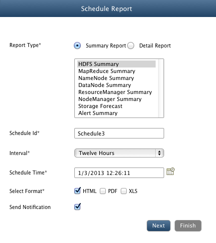
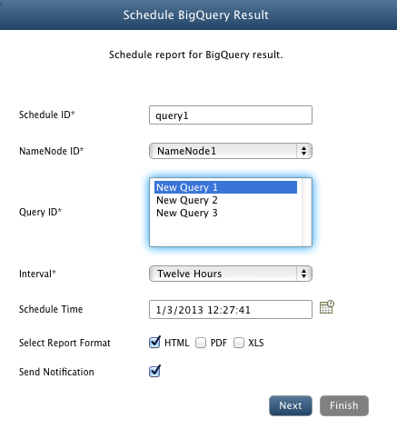
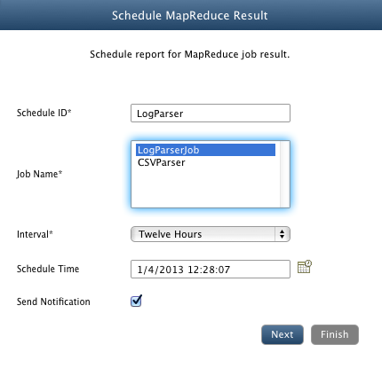
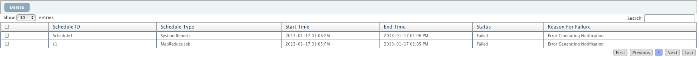

System Schedules
In this chapter
Schedules
Schedules view displays all the Scheduled reports, SQL Queries and MapReduce jobs. You can also manage these schedules by editing previous ones, creating new schedules or deleting schedules.
Managing Schedule
System Schedules are divided into three tabs : System Reports, Analytics Queries, MapReduce Jobs.
Click on Add button for type of schedule you want to add and fill in the required details.
Schedule System Reports
Add/Edit/Delete report schedules.
- Add Report Schedule
- Report Type: Select the type of report to be generated.
- Select Host: Select host for the "Detail Reports".
- Schedule Id: Provide a unique identifier for the schedule.
- Interval: Frequency of generating reports.
- Schedule Time: time to send email.
- Select Format: Format in which report will be generated. (HTML, PDF, XLS)
- Send Notification: Select check box if you want to receive notification.
- If "Send Notification" is checked:
- Notification Type: Select from "Email" or "Log".
- Message : Provide message for to be included in notification.
- Select from the available registered users to send notification (only for Email notification).
- Click Finish

- Edit Report Schedule
- Select the report from the list and click Edit
- All previous saved settings are displayed, edit the settings and click Finish
- Delete Schedule
- Select the schedule and click Delete
Schedule Query
Add/Edit/Delete Hadoop SQL schedules.
- Add Hadoop SQL Schedule
- Schedule Id: Provide a unique identifier for the schedule.
- NameNode ID: Select namespace whose Hadoop SQL query will be scheduled.
- Query ID: Select Hadoop SQL query to be executed.
- Interval: Frequency of generating reports.
- Schedule Time: time to send email.
- Select Format: Format in which report will be generated. (HTML, PDF, XLS)
- Send Notification: Select check box if you want to receive notification.
- If "Send Notification" is checked:
- Notification Type: Select from "Email" or "Log".
- Message : Provide message for to be included in notification.
- Select from the available registered users to send notification (only for Email notification).
- Click Finish

- Edit Hadoop SQL Schedule
- Select the Hadoop SQL query from the list and click Edit
- All previous saved settings are displayed, edit the settings and click Finish
- Delete Schedule
- Select the schedule and click Delete
Schedule MapReduce Jobs
Schedule MapReduce Job will start the selected job and sends notification email containing the final status of job execution.
Add/Edit/Delete MapReduce job schedules.
- Add MapReduce Job Schedule
- Schedule Id: Provide a unique identifier for the schedule.
- Job Name: Select MapReduce job to be executed.
- Interval: Frequency of generating reports.
- Schedule Time: time to send email.
- Send Notification: Select check box if you want to receive notification.
- If "Send Notification" is checked:
- Notification Type: Select from "Email" or "Log".
- Message : Provide message for to be included in notification.
- Select from the available registered users to send notification (only for Email notification).
- Click Finish

- Edit MapReduce Job Schedule
- Select the job from the list and click Edit
- All previous saved settings are displayed, edit the settings and click Finish
- Delete MapReduce Job Schedule
- Select the schedule and click Delete
Schedules Status
Schedules Status section shows the current status of all the Schedule types discussed above.
Schedule Status Details
- Checkbox: To select a schedule status.
- Schedule ID: Unique Schedule ID of the schedule.
- Schedule Type: Type of Schedule: System Reports, Hadoop SQL or MapReduce Jobs.
- Start Time: Starting time of the schedule.
- End Time: Ending time of the schedule.
- Status: Status time of the schedule- Success or Failure
- Reason For Failure: Reason behind failing of schedule, if failed.

Copyright © 2017 QueryIO Corporation. All Rights Reserved.
QueryIO, "Big Data Intelligence" and the QueryIO Logo are trademarks
of QueryIO Corporation. Apache, Hadoop and HDFS are trademarks of The Apache Software Foundation.